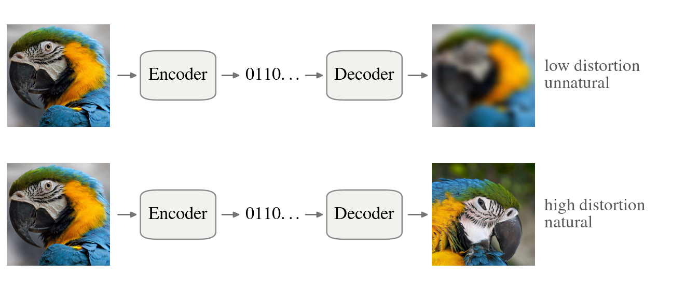
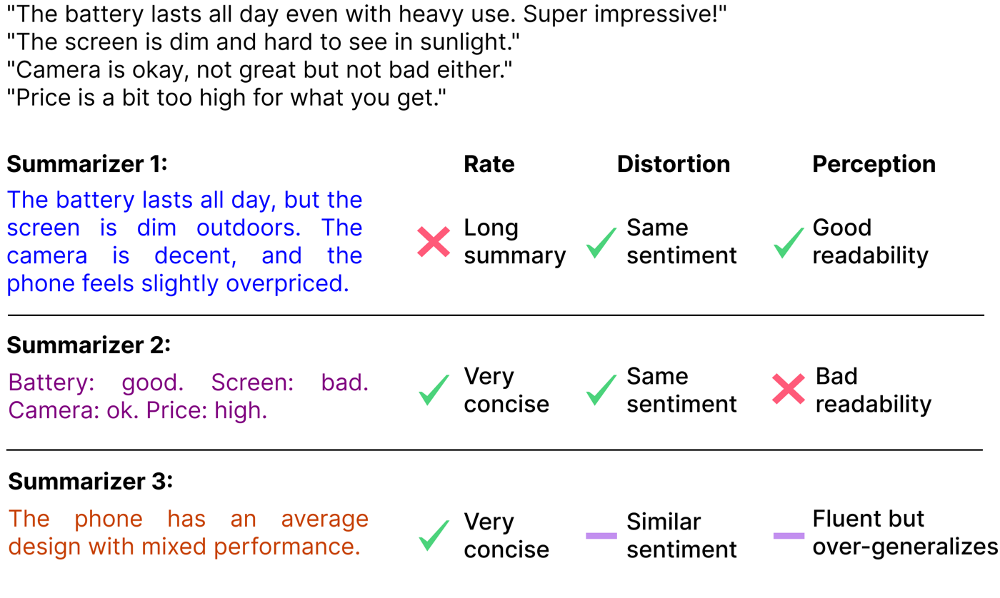
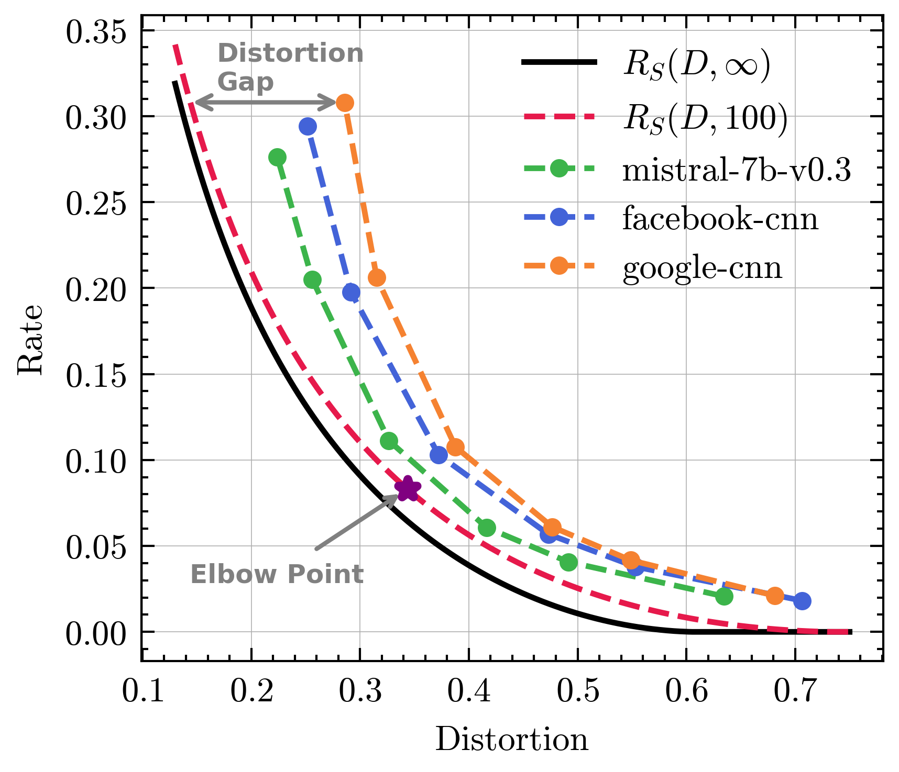
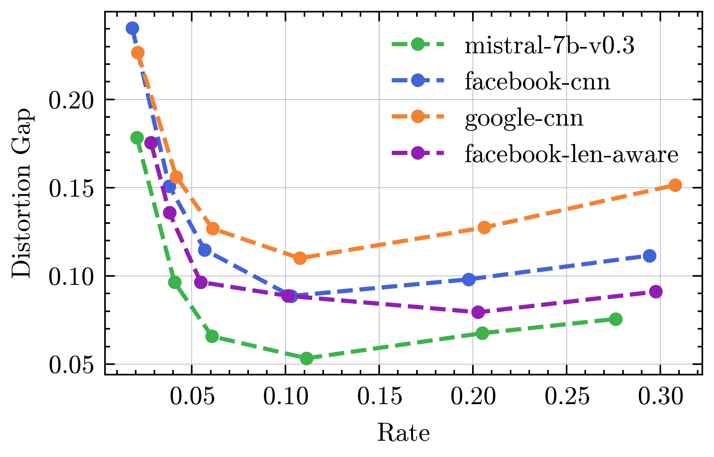

IEEE TCOM 2026 · ISIT 2025 · Allerton 2025
Fundamental Limits of Text Summarization
Posted
Summarization is lossy compression in which the compressed text is the end product. In classical lossy compression, the compressed representation is only a string of bits: a decoder turns it back into a reconstruction of the source. Shannon’s rate–distortion theory characterizes the limits of this classical setting, but summarization falls outside it. Can the limits of summarization be formalized with the same tools?
Shannon’s theory rests on two quantities: the rate (bits per source symbol) and the distortion (the expected dissimilarity between the source and its reconstruction). The rate–distortion function \(R(D)\) is the lowest rate achievable within distortion \(D\). Minimizing distortion alone, however, can favor reconstructions that look unnatural:

At low rates, many images are consistent with the bits, and the reconstruction with the lowest squared error is their average: a blur that looks like no real image. Sampling one of them instead gives a natural image, possibly of a different parrot, at exactly twice the squared error. Blau and Michaeli capture naturalness with a third quantity, perception, measured by a divergence \(\phi(p_X,p_{\hat X})\) between the distributions of the source \(X\) and its reconstruction \(\hat X\). Shannon showed that \(R(D)\) is a minimum of mutual information, and the rate–distortion–perception function adds perception as a second constraint:
With \({P=\infty}\), it reduces to Shannon’s \(R(D)\).
In summarization, a text \(T\) is compressed into a summary \(S\), and all three quantities carry over:
- Rate. The summary is the compressed representation, so the rate is its length as a fraction of the text’s, \(\ell(S)/\ell(T)\).
- Distortion. The summary is also the reconstruction, so \(d(T,S)\) compares it directly with the text, penalizing missed key points, hallucinated facts or a shifted sentiment.
- Perception. Natural now means reading like a good summary, so \(\phi(p_{\psi(S')},p_{\psi(S)})\) compares the distribution of summaries with that of good reference summaries \(S'\), such as human-written ones. Both are seen through a representation \(\psi\), from the text itself (\({\psi=\mathrm{id}}\)) to a semantic embedding. With \({\psi=\mathrm{id}}\), using the source as the reference would encourage unwanted features of the original text, such as its length and verbosity.
As with images, the three quantities pull against each other:

The third summary averages the four reviews into one vague sentence, the text counterpart of the blurry parrot.
One more difference separates summaries from codewords. Any string of bits is a valid codeword, but most strings of words are not meaningful summaries. If \(\mathcal S_m\) denotes the meaningful summaries of length \(m\), the effective alphabet size \({|\mathcal A_{\mathrm{eff}}|=\sup_m|\mathcal S_m|^{1/m}}\) measures how fast their number grows with \(m\), and we count information in its symbols so that it can be compared with length.
The opening question now takes a precise form:
How short can a summary be within given distortion and perception budgets?
Mirroring \(R(D,P)\), we define the summarizer rate–distortion–perception function (SRDPF):
Two changes separate the SRDPF from (1). The text’s length, which has no counterpart in classical rate–distortion theory, appears twice: dividing by its average \({\bar L=\mathbb{E}[\ell(T)]}\) mirrors the rate, and conditioning on \(\ell(T)\) counts only what the summary reveals about the content. And the source has left the perception constraint: naturalness is now measured against good summaries \(S'\), seen through \(\psi\).
The SRDPF also has the properties we expect of a trade-off between length, fidelity and naturalness:
- Diminishing returns. \(R_S\) is convex in \((D,P)\): each extra word buys less fidelity and naturalness than the last.
- Naturalness costs length. At some distortion levels, demanding perfectly natural summaries (\({P=0}\)) strictly raises the curve: \({R_S(D,0)>R_S(D,\infty)}\).
Our main result shows that no summarizer can beat it:
Theorem 1 (informal)
Under our assumptions, let texts be i.i.d. and summary lengths be set by text lengths. Even for summarizers that process many texts jointly, the lowest rate achievable within budgets \(D\) and \(P\) satisfies
Where the length goes
Theorem 1 bounds the rate from below. In effective-alphabet symbols, writing \({L=\ell(T)}\) and \({M=\ell(S)}\), the rate of any one-shot summarizer of this kind splits exactly into the information it carries and a slack \(\sigma\):
All three terms are nonnegative, and each is a different kind of overhead:
- Alphabet gap. At some lengths, the language has fewer meaningful summaries than \(|\mathcal A_{\mathrm{eff}}|^m\). This depends on the language alone.
- Uneven use. The summarizer favors some summaries of a given length over others, whereas an efficient code uses its codewords evenly.
- Content randomness. The summary varies in ways the text does not explain. Deterministic decoders, such as greedy or beam search, have none.
A classical code drives all three to zero: any bit string is a valid codeword, codewords are used evenly, and encoders are deterministic. Summaries have no such freedom: they must be meaningful text, and the rate counts every word. The slack is the price of the compressed text being the end product.
Together with Theorem 1, the identity makes the SRDPF the exact limit whenever summarizers can approach it with vanishing slack.
Computing the SRDPF
For small discrete sources, the SRDPF can be computed exactly. Real text rules this out: with a vocabulary of about 100,000 tokens, even 10-token strings have about \(10^{50}\) possibilities, far more than any dataset can cover.
Instead, we map texts to semantic embeddings \(\psi(T)\in\mathbb R^k\). This can only lose information, so the embedding-level SRDPF remains a lower bound. Embeddings also largely ignore length and verbosity, so the source itself can serve as the reference. Under a Gaussian model in each length bin, with squared distance as distortion and KL divergence as perception, the SRDPF reduces to a convex program that needs only each bin’s covariance eigenvalues.
What the curve is good for
On CNN/DailyMail, we estimate the curves from BGE-M3 embeddings and run Mistral-7B, BART and PEGASUS at several lengths:

Consistent with Theorem 1, both curves lie below all three summarizers. Diminishing returns give the curve with perception an elbow near rate 0.08, close to the 0.09 rate of the human-written reference summaries. With perfect perception (\({P=0}\)), the curve rises above most of their operating points. Since none of them reaches \({P=0}\), this is no contradiction, and it shows the bound is not trivially low.
Because most automatic metrics reward length, summarizers are usually compared at a fixed length. The curve compares them at any length: a summarizer’s distortion gap, its horizontal distance to the curve, measures its efficiency at its own length:

BART and PEGASUS, fine-tuned on this dataset, are closest to the curve around the rate of its reference summaries, which is exactly the length at which summarizers are usually compared. At other lengths their gaps grow, a weakness that a comparison at that length cannot see. Fine-tuning BART on Mistral’s summaries at five lengths, with a token marking the target length, shrinks those gaps.
Citation
@article{arda2026fundamental,
title = {Fundamental Limits for Text Summarization: A Rate--Distortion--Perception Approach},
author = {Arda, Enes and Yener, Aylin},
journal = {IEEE Transactions on Communications},
year = {2026},
note = {To appear}
}